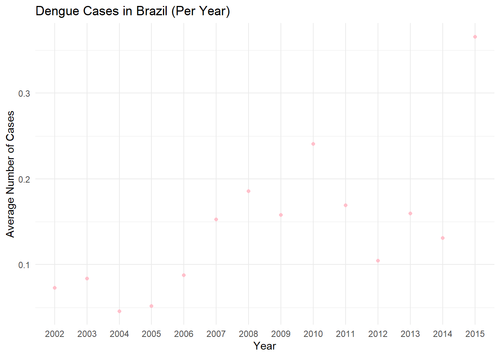
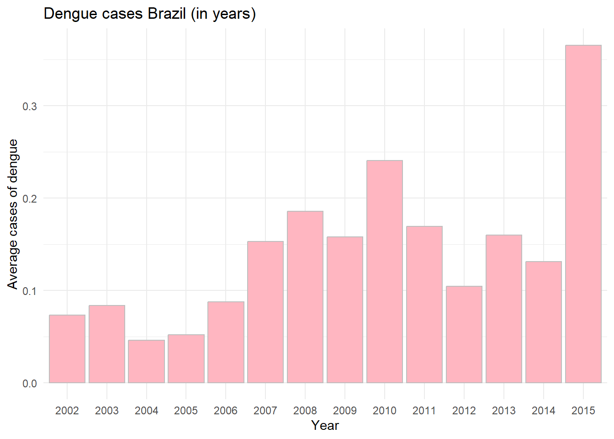

5 SQL
The datasets flu_data and dengue_data are loaded using the read_csv() function, while gapminder_data is directly used from the gapminder dataset.
After loading the data, they are tidied using pivot_longer() to transform the data into a long format. This separates columns for countries and values, adding a year column extracted from the Date column using str_sub().The tidied datasets are then saved as both CSV and RDS files. This is done using write.csv() and saveRDS(). Following that, a connection is established with a PostgreSQL database named workflowsdb using dbConnect(). Tables for flu, dengue, and gapminder are then written to the database using dbWriteTable(). After saving the data to the database, the tables are combined using dplyr functions full_join() and inner_join(). This results in a combined dataset that is further visualized. Finally, visualizations are created, including a boxplot of dengue cases per year in Brazil and a bar chart showing average dengue cases per year.
Using SQL, I was able to load datasets, tidying the data, and then store them in a PostgreSQL database. DBBeaver was used as the tool to connect to and manage the PostgreSQL database. DBBeaver is a powerful, open-source database management tool that simplifies interacting with databases by providing a user-friendly interface for running SQL queries, creating tables, managing schemas, and performing various data operations.
# Load required libraries
library(tidyr)
library(dplyr)
library(stringr)
library(DBI)
library(RPostgres)
library(readr)
library(dslabs)
library(ggplot2)
# Load in data
flu_data <- read_csv("~/Rachelle/flu_data.csv", skip = 11)
dengue_data <- read_csv("~/Rachelle/dengue_data.csv", skip = 11)
gapminder_data <- gapminder
# Make data tidy
flu_tidy <- pivot_longer(data = flu_data, cols = c(2:30), names_to = "Country", values_to = "Value")
flu_tidy <- flu_tidy %>% mutate(year = str_sub(Date, 1, 4)) %>% select(-Date)
dengue_tidy <- pivot_longer(data = dengue_data, cols = c(2:11), names_to = "Country", values_to = "Value")
dengue_tidy <- dengue_tidy %>% mutate(year = str_sub(Date, 1, 4)) %>% select(-Date)
gapminder_data <- as_tibble(gapminder_data)
gapminder_data <- gapminder_data %>%
rename(Year = year, Country = country) %>%
mutate(Year = as.character(Year)) # Convert Year to character# Save dataframes
write.csv(flu_tidy, "flu_tidy.csv")
write.csv(dengue_tidy, "dengue_tidy.csv")
write.csv(gapminder_data, "gapminder_tidy.csv")
saveRDS(flu_tidy, "flu_tidy.rds")
saveRDS(dengue_tidy, "dengue_tidy.rds")
saveRDS(gapminder_data, "gapminder_tidy.rds")
# Connect to database in PostgreSQL
con <- dbConnect(RPostgres::Postgres(),
dbname = "workflowsdb",
host="localhost",
port="5432",
user="postgres",
password="password")
dbWriteTable(con, "gapminder", gapminder_data)
dbWriteTable(con, "flu", flu_tidy)
dbWriteTable(con, "dengue", dengue_tidy)# Inspect contents of the tables
knitr::include_graphics("C:\\Users\\rache\\OneDrive\\Documenten\\Schermafbeelding 2024-08-18 230338.png")
knitr::include_graphics("C:\\Users\\rache\\OneDrive\\Documenten\\Schermafbeelding 2024-08-18 230429.png")
knitr::include_graphics("C:\\Users\\rache\\OneDrive\\Documenten\\Schermafbeelding 2024-08-18 230509.png")
# Join the tables together
flu_tidy <- flu_tidy %>% mutate(year = as.character(year))
dengue_tidy <- dengue_tidy %>% mutate(year = as.character(year))
flu_dengue <- full_join(flu_tidy, dengue_tidy, by = c("Country", "year"), suffix = c("_flu", "_dengue"))
# Rename 'year' to 'Year' in flu_dengue for consistency with gapminder_data
flu_dengue <- flu_dengue %>% rename(Year = year)
# Join with gapminder
flu_dengue_gapminder <- inner_join(flu_dengue, gapminder_data, by = c("Country", "Year"))
# Check the resulting dataframe
print(flu_dengue_gapminder)## # A tibble: 155,161 × 11
## Country Value_flu Year Value_dengue infant_mortality life_expectancy
## <chr> <dbl> <chr> <dbl> <dbl> <dbl>
## 1 Argentina NA 2002 NA 17.1 74.3
## 2 Australia NA 2002 NA 5 80.3
## 3 Austria NA 2002 NA 4.4 78.8
## 4 Belgium NA 2002 NA 4.4 78.2
## 5 Bolivia NA 2002 0.101 53.7 68.7
## 6 Brazil 174 2002 0.073 24.3 71.4
## 7 Bulgaria NA 2002 NA 16.3 72.1
## 8 Canada NA 2002 NA 5.3 79.6
## 9 Chile NA 2002 NA 8.3 77.7
## 10 France NA 2002 NA 4.2 79.4
## # ℹ 155,151 more rows
## # ℹ 5 more variables: fertility <dbl>, population <dbl>, gdp <dbl>,
## # continent <fct>, region <fct># Boxplot dengue cases per year in Brazil
dengue_Brazil <- flu_dengue_gapminder %>% select(Year, Country, Value_dengue) %>% filter(Country == "Brazil", !is.na(Value_dengue))
dengue_sum <- dengue_Brazil %>%
group_by(Year) %>% summarise(mean = mean(Value_dengue, na.rm = TRUE), stedv = sd(Value_dengue, na.rm= TRUE))
ggplot(dengue_sum, aes(x = as.factor(Year), y = mean)) +
geom_point(color = "pink") +
labs(title = "Dengue Cases in Brazil (Per Year)",
x = "Year",
y = "Average Number of Cases") +
theme_minimal()
# Barchart of dengue cases per year
denguebar_plot <- ggplot(dengue_sum, aes(x = as.factor(Year), y = mean)) +
geom_col(fill = "lightpink", color = "grey") +
labs(title = "Dengue cases Brazil (in years)",
x = "Year",
y = "Average cases of dengue") +
theme_minimal()
denguebar_plot